Fotos tiradas do jogo em 14/11 com um controle SIMULADO (o navegador automático não tem controle de verdade). Para conferir com o seu: ligue o controle, aperte qualquer botão, e abra CONFIGURAÇÕES → CONTROLES.
O perfil de cada aparelho no topo; abaixo, as cinco ações com uma tecla e um botão cada. Sem controle ligado, a coluna dele fica apagada.
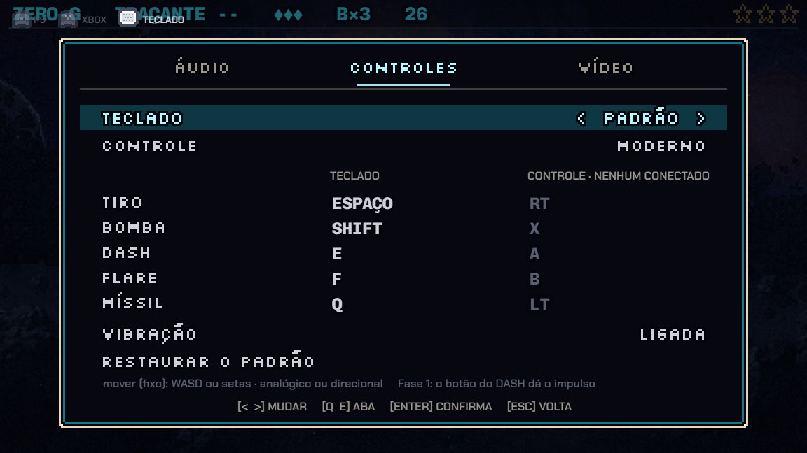
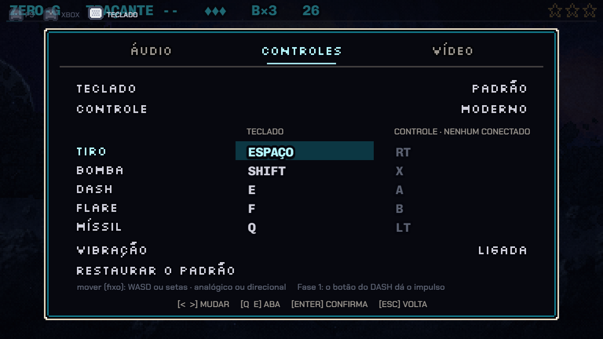
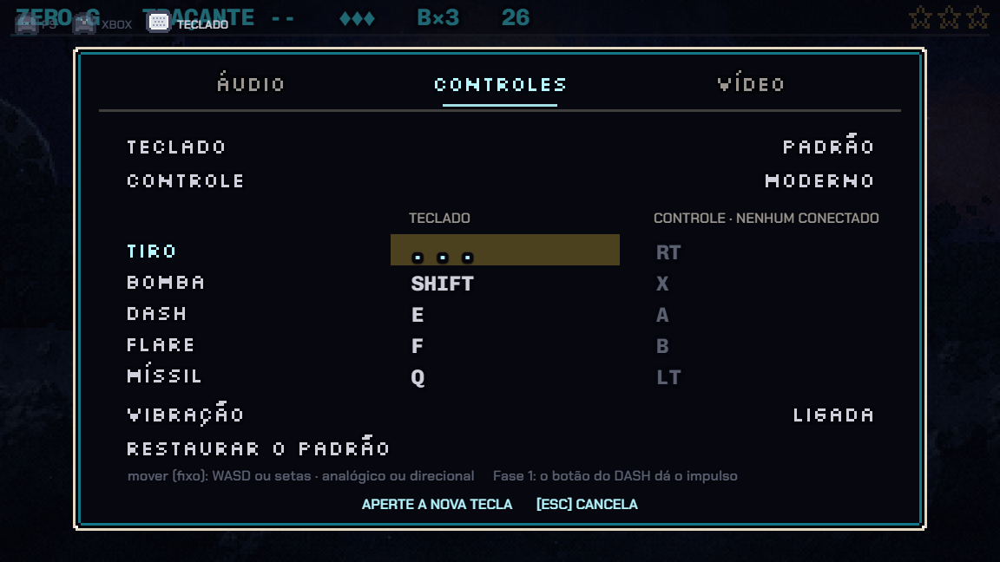
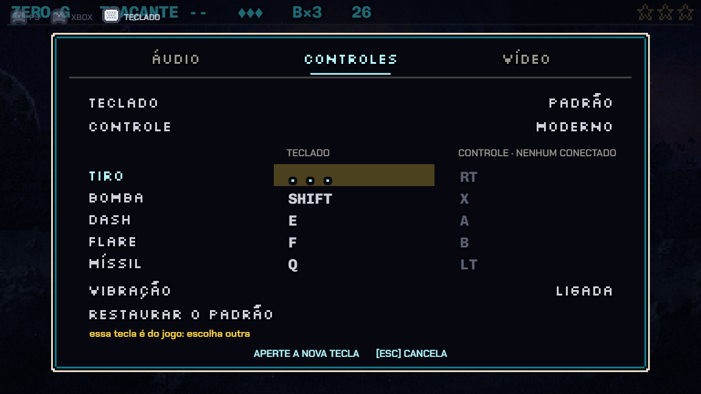
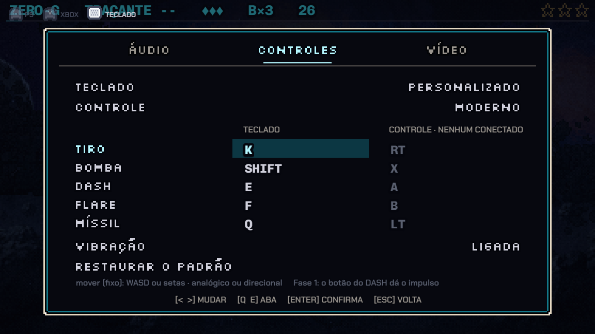
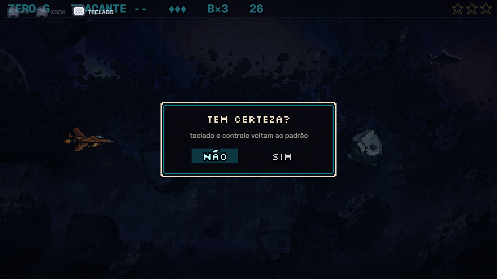
As dicas viram botões assim que o controle é tocado. Os ícones são do pacote "Input Prompts Pixel" da Kenney (CC0, domínio público).
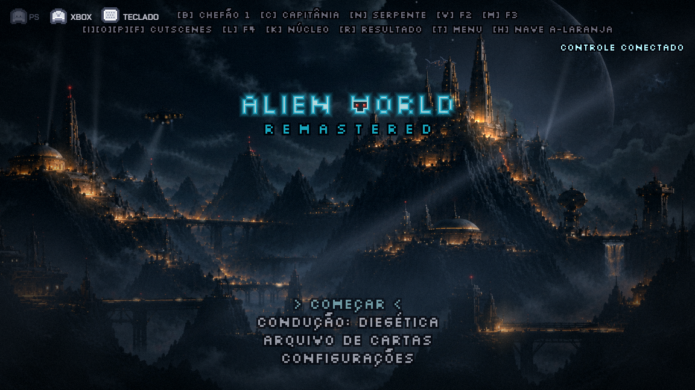
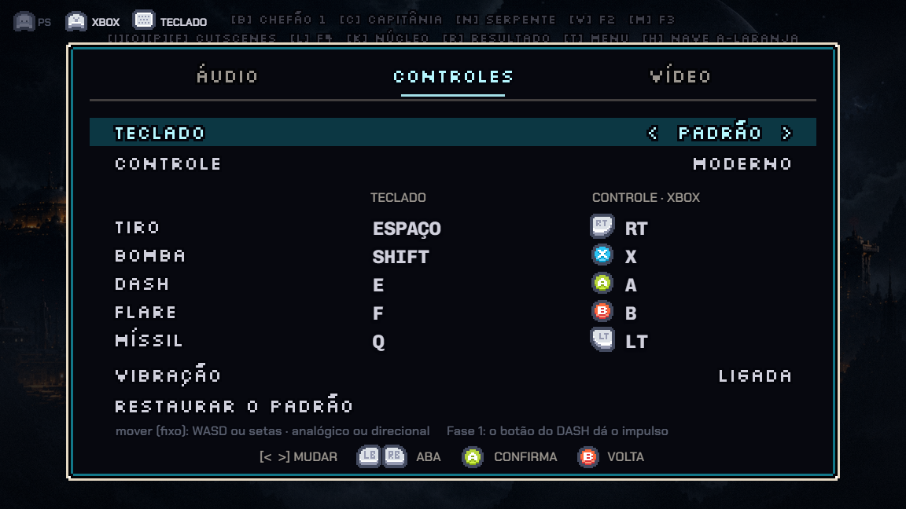
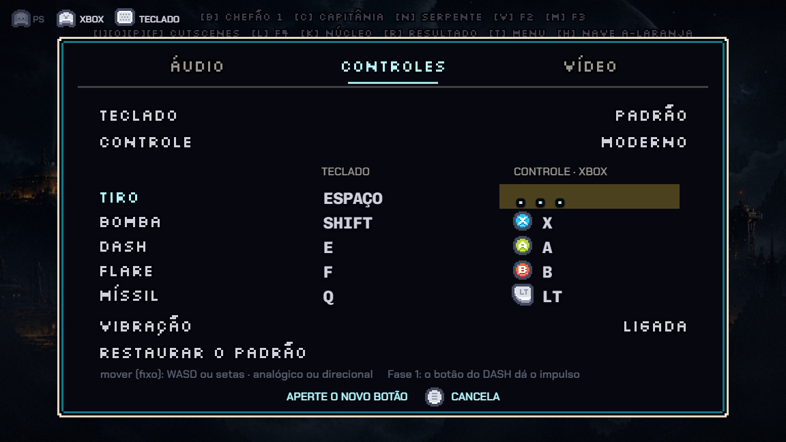
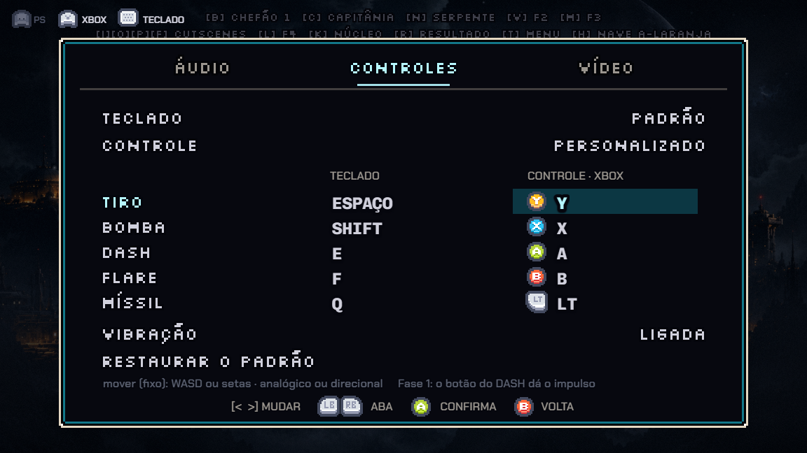
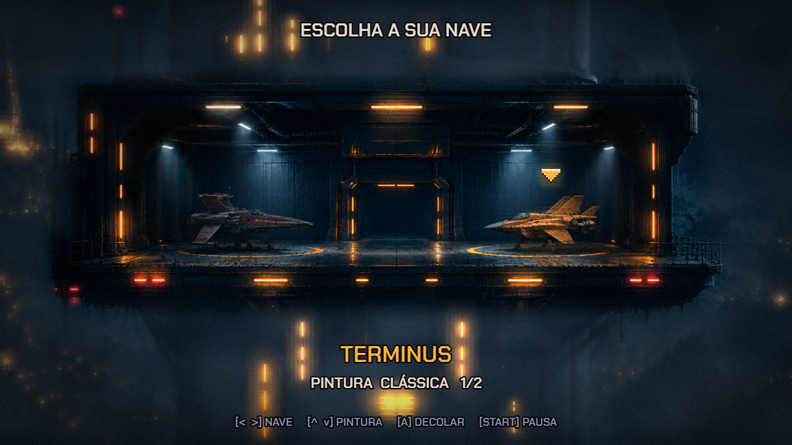
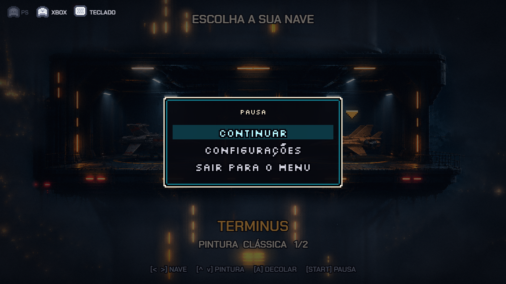
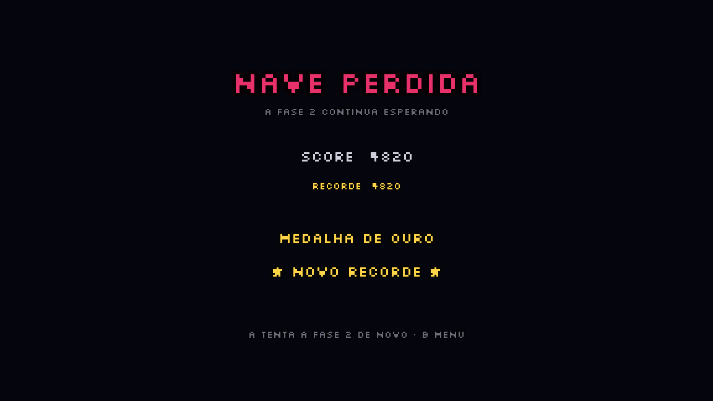
O jogo reconhece a família pelo nome do aparelho e troca os nomes e os ícones.
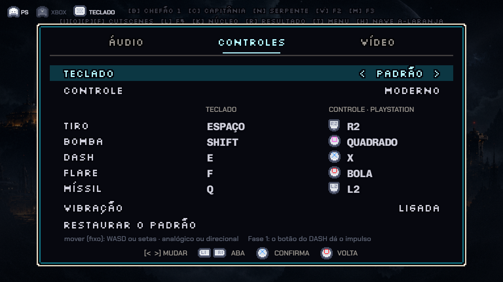